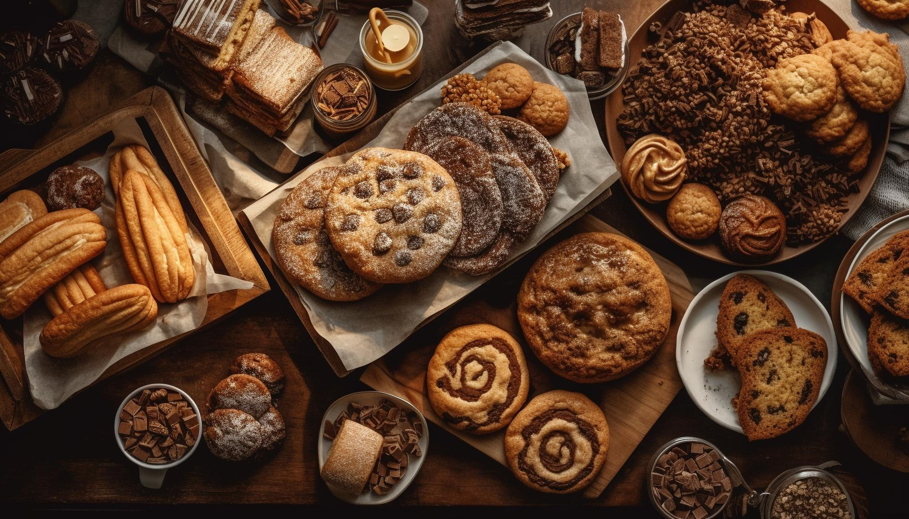
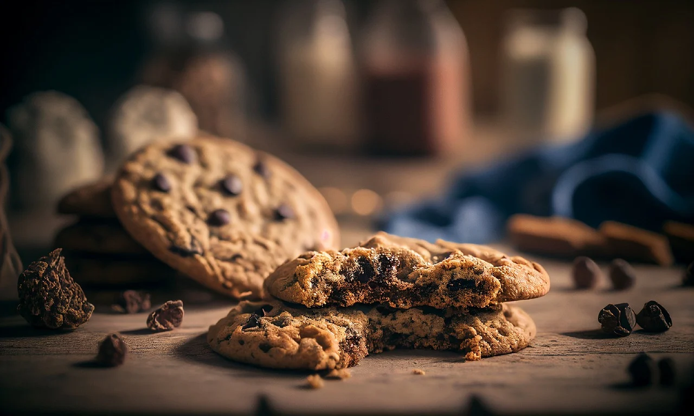

The World of Baking
Baking can be an expensive hobby depending on what brand of ingredients you use. It could be compared to cooking, but baking is more of a science than an art. With enough practice, it can become an art, though.
Here's an easy-to-navigate baking website to get started!

Cookies Galore
In this website's bias opinion; cookies are the best thing to bake. It's the ultimate equalizer to all baked goods. It can range from the ever-loved chocolate chip, to the vanilla sugar cookie. There's a type for everybody.
A list full of types of cookies and recipes attached!
Bakeries to Check Out!
In New England, there are numerous bakeries to check out when traveling to other states. New York, due to it's "big-city" status, will be your best bet. They have Magnolia Bakery, and Dominique Ansel Bakery. Thankfully, one of the best cookie shops, Levain Bakery, has a store in Boston!
Levain has a website where you can ship their cookies to your door!